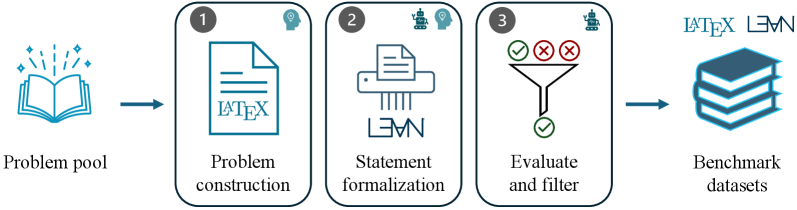
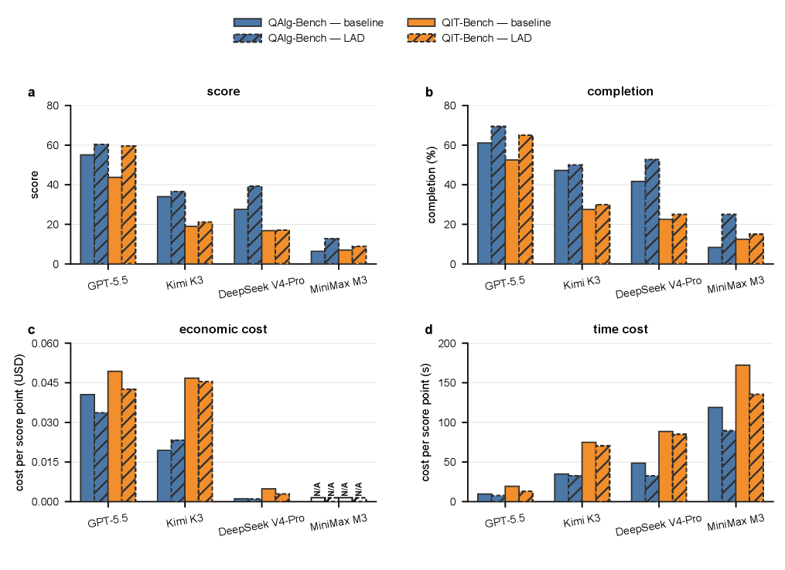
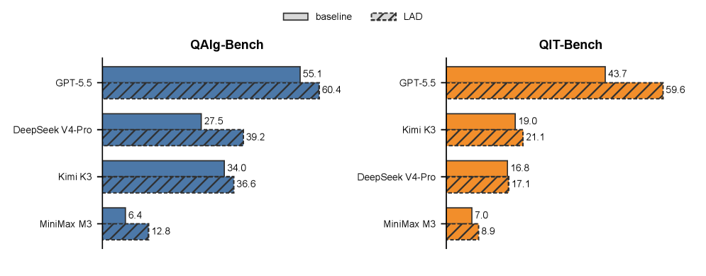

Introduces two Lean 4 benchmarks (36 and 40 theorem-completion tasks) for quantum algorithms and quantum information, evaluating AI proof agents via Lean compilation.
Abstract
Formal verification is becoming increasingly practical for quantum computing, yet the ability of AI agents to construct machine-checkable proofs in this domain remains unmeasured. We introduce Lean-QuantumAlg-Bench and Lean-QIT-Bench, two Lean 4 benchmarks containing 36 and 40 theorem-completion tasks for quantum algorithms and quantum information theory, respectively. Every task compiles in a fixed environment and is evaluated by deterministic proof checking and targeted semantic review, with difficulty weights assigned before model execution. We evaluate four models-GPT-5.5, Kimi K3, DeepSeek V4-Pro, and MiniMax M3-within a common theorem-proving framework under two settings: a task-only baseline and library-augmented deduction (LAD), which additionally provides access to a verified domain library. The highest difficulty-weighted scores are 60.4 out of 100 on the quantum-algorithm benchmark and 59.6 out of 100 on the quantum-information benchmark. LAD improves both score and completion rate in all eight model-benchmark comparisons, with gains of up to 15.9 points, providing evidence that verified libraries can strengthen domain-specific proof agents. The results reveal recurring weaknesses of agentic proving in areas such as quantum simulation, quantum learning, quantum information measures, and entanglement theory. Monetary and wall-clock costs per score point also vary substantially across models, highlighting important capability-efficiency trade-offs. We expect these benchmarks to establish a reproducible baseline for developing more capable and reliable proof agents, and to pave the way toward self-evolving AI scientists for advancing quantum information science.
Problem
The ability of AI agents to construct machine-checkable proofs for quantum computing in Lean remains unmeasured. There is no reproducible baseline for domain-specific proof agents in quantum algorithms and quantum information theory.
Approach
Two Lean 4 benchmarks, Lean-QuantumAlg-Bench (36 tasks) and Lean-QIT-Bench (40 tasks), are constructed with theorem-completion tasks that compile in a fixed environment and are checked deterministically. Tasks are organized into six fields with pre-assigned difficulty weights. Four models (GPT-5.5, Kimi K3, DeepSeek V4-Pro, MiniMax M3) are evaluated under a task-only baseline and library-augmented deduction (LAD) providing access to verified domain libraries (Lean-QuantumAlg, Lean-QIT). Success is determined by whether the submitted theorem body compiles.

Figure 1: Benchmark construction workflow. Candidate problems are selected and written, translated into Lean, and checked before they enter the QAlg-Bench and QIT-Bench suites.
Results
Highest difficulty-weighted scores were 60.4/100 on the quantum-algorithm benchmark and 59.6/100 on the quantum-information benchmark. LAD improved score and completion in all eight model-benchmark comparisons, with gains up to 15.9 points. Recurring weaknesses appeared in quantum simulation, learning, information measures, and entanglement theory.

Figure 2: Verified performance and per-score costs across QAlg-Bench and QIT-Bench. Panels (a,b) show the difficulty-weighted score and completion, respectively. Panels (c,d) show economic cost in USD per score point and time cost in seconds per score point, respectively; lower values indicate lower cost. Blue and orange identify QAlg-Bench and QIT-Bench. Solid, unhatched bars indicate the baselin

Figure 4: Within-suite score leaderboards for QAlg-Bench and QIT-Bench. Each model has adjacent baseline and LAD bars, with exact difficulty-weighted scores printed at the bar ends. Models are ordered within each suite by the larger of their two condition scores; ties are ordered as GPT-5.5, Kimi K3, DeepSeek V4-Pro, and MiniMax M3. Blue and orange identify QAlg-Bench and QIT-Bench, while solid ou
Suite
Model
Score
Completion
QAlg
GPT-5.5
+9.6%
+13.6%
QAlg
DeepSeek V4-Pro
+42.5%
+26.7%
QIT
GPT-5.5
+36.4%
+23.8%
QIT
MiniMax M3
+26.1%
+20.0%
LAD relative improvements over baseline across suites and models